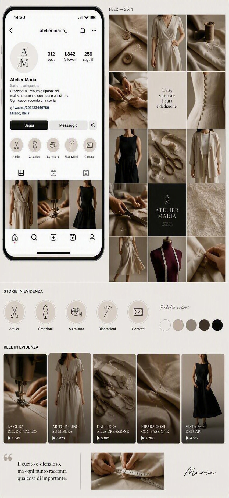

Ascolto
Racconti l'idea, l'occasione e come desideri sentirti nel capo.
Sartoria artigianale · Sardegna
Capi su misura, trasformazioni e dettagli realizzati lentamente, con precisione e cura.
Esplora il catalogo ↗
Scorri per scoprireUna storia cucita a mano
 01 · Creazioni
01 · CreazioniOgni capo nasce da un incontro, una misura, una scelta di materia.
Scopri i capi → 02 · Dettagli
02 · Dettagli 03 · Movimento
03 · MovimentoDall'idea al capo
Racconti l'idea, l'occasione e come desideri sentirti nel capo.
Definiamo linea, tessuto, dettagli e vestibilità.
Taglio, cucitura e rifiniture prendono forma a mano.
Il capo viene regolato fino a trovare il suo equilibrio.
Hai un'idea?